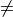

Statistical Bias#
TODO
Classifications#
Bias is a type of systematic error that arises when the sample data that is used to draw conclusions about the population does not accurately reflect the population.
Selection Bias#
- Definition
Selection bias occurs when the sampling method is not representative of the entire population.
As an extreme example to illustrate the meaning of this type of bias, if you were interested in making assertions about the average height of a United States citizens, selecting a sample of 100 elementary schoolers would lead you to make wildly erroneous conclusions.
A famous example of how to avoid selection bias is the work of Abraham Wald during World War II. Wald was a statistican at Columbia University who was analyzing damage done to aircraft that had taken enemy fire. Had he only used the sample as his disposal, the aircraft that survived the war and made their way to Columbia University to be examined by him, he would have erroneously concluded the areas where craft sustained major damaged needed re-inforced with armor.

However, the sample he was looking at only represented aircraft that had survived, not the entire population of aircraft. In other words, the sample was not representative of the aircraft that had not survived, and thus could not be used to draw inferences about where on the body of the aircraft to re-inforce with armor.
Instead, he reasoned, the areas where the surviving aircraft had not sustained damage were likely the areas the aircraft that had not survived had sustained damage. Counter-intuitively (but statistically sound), he proposed re-inforcing the areas on the surviving planes where there was no damage.
His statistical insight led to a reduction in the number of aircraft causalities during the war.
Response Bias#
- Definition
Response bias occurs when the sampling method is over-representative or under-representative of certain segments of the population, due to individual effects on the observation.
A typical example of this kind of bias can be found in cold-calling telephone surveys. Most people are likely to ignore robo-calls for political polls, and the set of people who do answer the calls are likely not an accurate representation of the entire population.
A famous example of this kind of bias is the 1948 Election Between Thomas Dewey and Harry Truman. The polling data the Chicago Tribune relied on showed Dewey winning by a huge margin [*]
The results of the polls versus the actual result of the election are shown below,
Candidate |
Crossley |
Gallup |
Roper |
Actual |
|---|---|---|---|---|
Truman |
45 |
44 |
38 |
50 |
Dewey |
50 |
50 |
53 |
45 |
Other |
5 |
6 |
9 |
5 |
While polls will never agree 100% of the time with reality, the error in this case was extreme. Upon investigating what went wrong, it was discovered the pollsters at the organizations of Crossley, Gallup and Roper were told to survey a certain number of people. Beyond that, they were free to choose who to include in the survey. They ended up calling their friends, family and close relatives. This led to the data they collected being biased, resulting in an infamous photograph,

Observer Bias#
- Definition
Observer Bias occurs when the act of observation changes that which is being observed.
Examples of this type of bias can crop up when pollsters ask leading questions, such as, “Do you still drink coffee?” versus the more neutral phrasing, “Do you drink coffee?”. Depending on how the question is phrased, a different answer might be given.
A more famous example of this type of bias is the Milgram Experiment conducted by Dr. Stanley Milgrim at Yale University. The Milford Experiment was a psychological study wherein participants were told they were testing the effects of phyiscal punishment, in form of an electric shock, on the memory. Participants were to be paired off as teacher and learner. The learner would be asked to memorize a series of words, and then asked to recite them. If they got the words wrong in the recitation, the teacher would administer an electric shock to the learner. Each time a wrong answer was given, the voltage of the electric shock was increased.

Milgram Experiment
Click on the image to play the video.
Unbeknownst to the participants of the study, this wasn’t the actual experiment. In reality, the learner in every experiment was a paid actor and the electric shocks weren’t real. The actor would intentionally get answers wrong and then pretend to be in pain when the teacher was administering the fake electric shocks. The teacher was the real object of study. Dr. Milgram was trying to see how much pain a randomly selected individual would inflict on someone else simply because they were told to do it.
When participants expressed unease or concern, the researchers running the study, intentionally dressed in white lab coats to give the appearance of authority, would give one of the following responses,
Please continue.
The experiment requires that you continue.
It is absolutely essential that you continue.
You have no other choice; you must go on.
The actor would get many questions wrong, forcing the teacher to increase the voltage of the shock. Most, but not all, participants would quit before reaching the maximum voltage. Dr. Milgrim found 14 of the 40 participants in the original study would increase the voltage of the shock all the way up to the maximum amount, as long as a researcher was there to instruct him or her to continue.
Subsequent variations of this experiment have shown the way the researcher responds to the participant’s concern after hearing the actor cry out in pain significantly affects the results. In Dr. Milgram’s original experiment, the responses were phrased in such a way as to imply the actor’s pain was for the “good of the experiment”. If instead of saying,
The experiment requires that you continue.
Researchers instead said,
You are ordered to continue.
The results were vastly different. With this slight change, the results were nowhere near as large as in Dr. Milgrim’s original experiment; Participants were more more likely to quit before reaching the maximum shock threshold. In other words, when the participants did not believe there to be a “greater good” at stake they would quit at greater rates than if they did.
The key takeway from the Milgram experiment is how you make the observation may change what you are observing.
Correlation Vs. Causation#
The phenomenon of correlation, a statistical quantity we will study in much greater detail later on in the class, can be summed up succintly,
Correlation is the tendency of two variables to vary together, either positively or negatively.
As an illustrative example of positive correlation, the average speed of a car on a highway is positively correlated with the number of speeding tickets received by its driver. The faster one goes on the highway, the more tickets one receives on average.
As an illustrative example of negative correlation, the number of cigarettes smoked a week is negatively correlated with the lifespan of the smoker. The more cigarettes smoked a week, the shorter the lifespan of the smoker on average.
In these examples, the two variables being measured are related through a causal mechanism, i.e. we can think of one variable being the “cause” of the other.
In the first example, state speeding laws determine the nature of the correlation between the variable “average highway speed” and the variable “number of tickets, so we say “speeding causes tickets””
In the second case, the facts of biology determine the the nature of the correlation between the variable “number of cigarettes smoked” and the variable “lifespan”, so we say “smoking causes shorter lifespans”.
In each of these cases, we can identify “how” one variable determines the value of the other.
However, correlated variables do not necessarily imply a causal relationship between the quantities being observed, i.e. correlation does not imply a relationship of cause and effect.
Important
Correlation  Causation
The following image illustrates why we cannot infer causation from correlation,